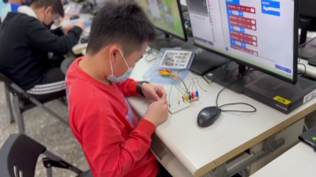
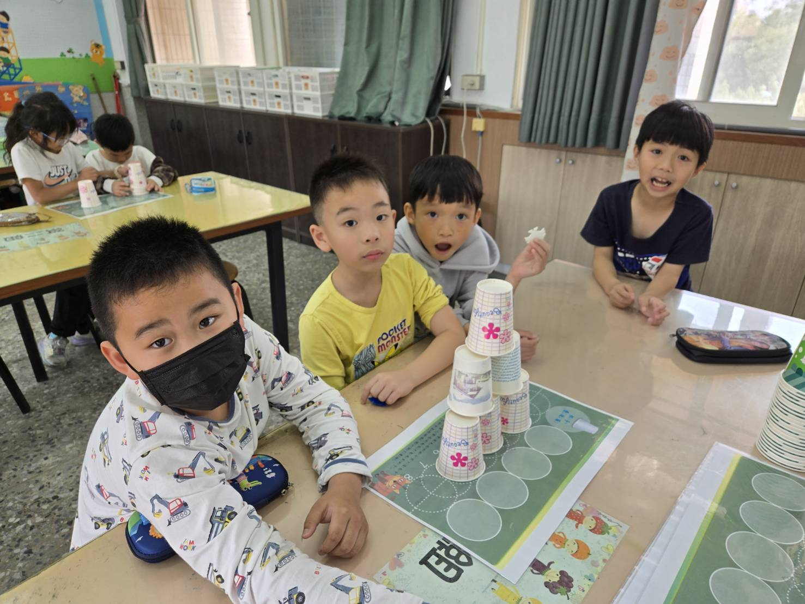
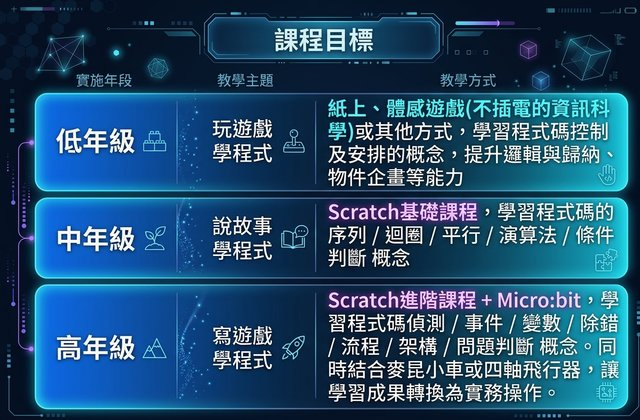
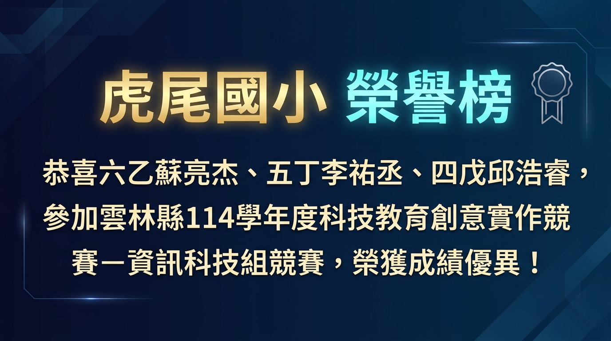
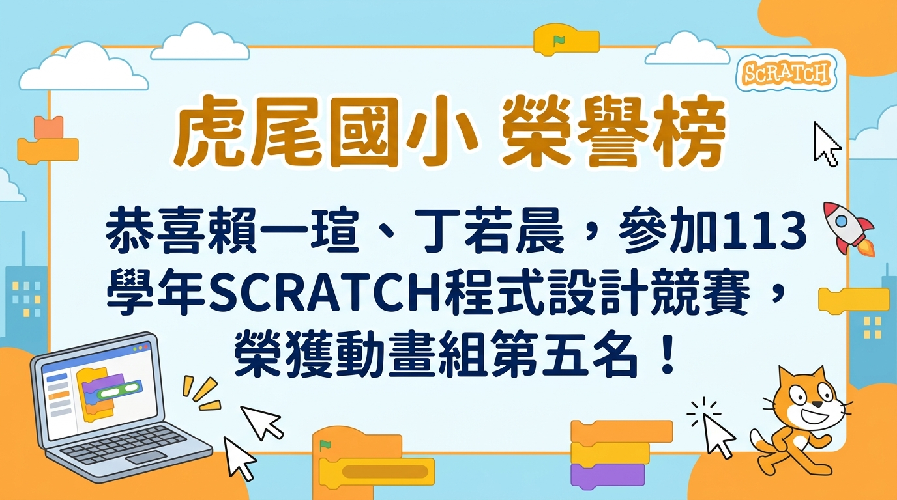
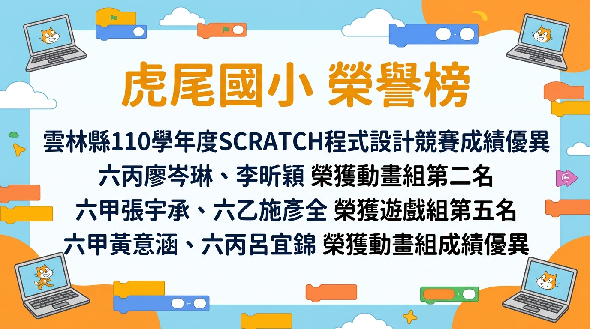
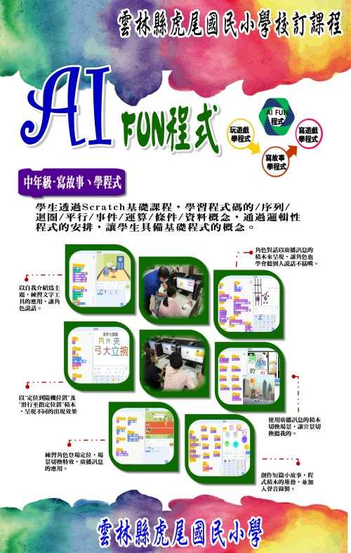
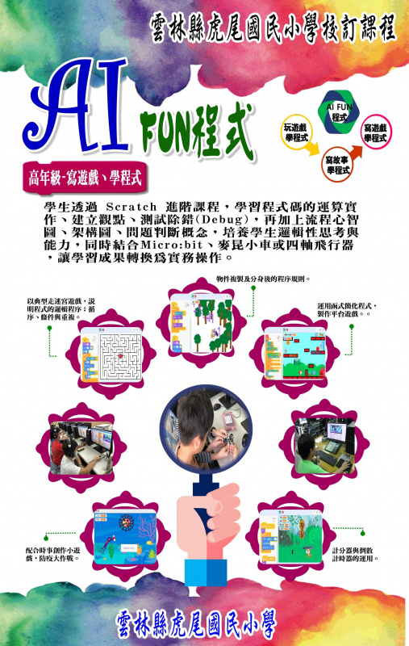
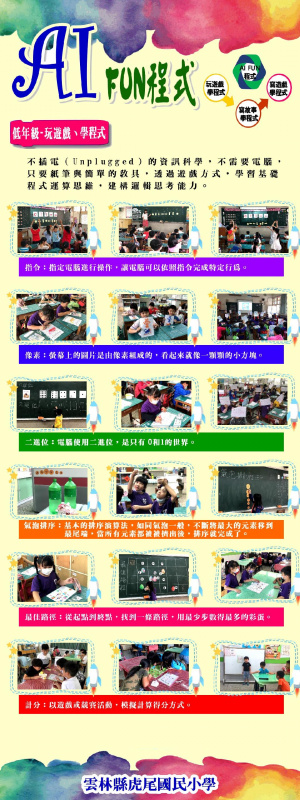

玩遊戲學程式
透過紙上活動與體感遊戲，建立序列、規則、分類與問題解決的概念。
雲林縣虎尾國民小學
從程式邏輯、AI FUN 程式、互動創作到實作專題，展現孩子把想法變成作品的學習歷程。
Curriculum






透過紙上活動與體感遊戲，建立序列、規則、分類與問題解決的概念。
以 Scratch 製作動畫與互動故事，練習迴圈、平行、條件判斷與角色控制。
整合 Scratch、micro:bit 與實作任務，完成遊戲、感測與創意專題。


學生運用科技應用、問題解決與創意實作能力，在資訊科技相關競賽中展現亮眼成果。
學生以動畫短片與互動遊戲展現故事表達、程式邏輯與團隊合作能力。




學生從角色、舞台與積木指令開始，逐步完成迷宮、互動故事、射擊與闖關作品，讓抽象邏輯變成看得見的作品。



透過形狀、節點、色彩與排版練習，學生製作標誌、徽章、海報與輸出圖稿，培養資訊課中的視覺表達能力。
幾何圖案、對齊、漸層、圖層管理。
結合資訊安全、校園活動與創意文字。
轉成 PNG、SVG 或後續雷切與 3D 建模參考。
以 LED、按鈕、無線廣播與感測器完成倒數計時、呼吸燈、遙控與生活情境任務，把程式帶到真實世界。
圖案、動畫、訊息與變數顯示。
加速度、亮度、溫度與按鈕事件。
發送端與接收端協作，完成控制挑戰。
從草圖、尺寸、建模到切片輸出，學生學習把想法做成可使用的物件，並在測試後修正設計。
鑰匙圈、姓名牌、收納小物與校園主題作品。
長寬高、比例、厚度與支撐結構。
觀察成品，調整模型與列印設定。